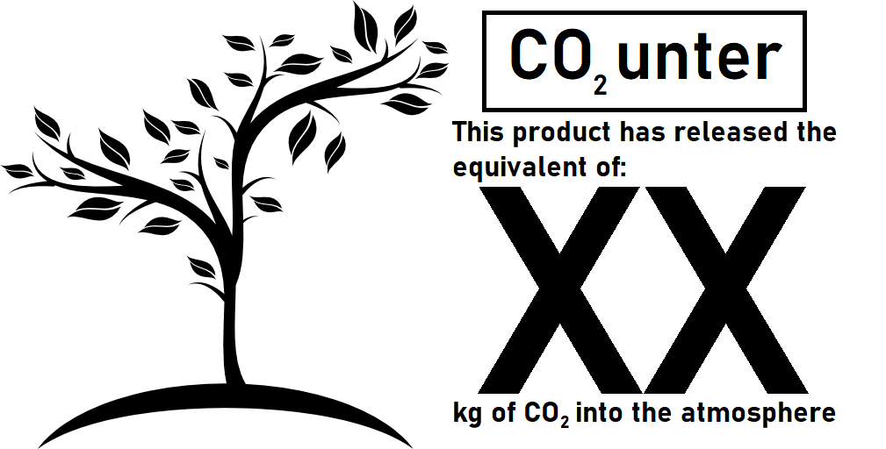

What is the CO2 Counter?
CO2unter, is a label to put on most commercial products so that it is easier for consumers to make choices that are better for the environment. This counter includes everything from production of raw materials, to packing, to transport etc. it also translates other things from CO2 (like CO) to CO2, for it to be easier for the consumer.
Why is the CO2 Counter needed?
It is a smart way to help consumer make smart decisions for our planet, where many people are struggling at the moment to make concious decisions because of the limited information available.

How does the CO2 counter work?
After a product has been properly asessed, this sticker will be small but easily visible on the product specifications, both online and on the product itself:
Contact info
Øystein Hetland, s354354@oslomet.no
Emilie Solbakken, s354353@oslomet.no